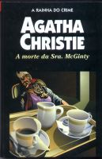

A Morte da Sra. McGinty
Mrs. McGinty's Dead
James Bentley estava desempregado, sem dinheiro e devia dois meses de aluguel à Sra. McGinty. Assim, o assassinato dela parecia um caso muito simples, já que Bentley tinha todos os motivos para cometer o crime. Levado a julgamento, ele é considerado culpado e condenado à morte. Mas o superintendente Spence duvida do veredicto e pede a Hercule Poirot que investigue o crime. Poirot se depara com um assassino impiedoso e sabe que precisa trabalhar depressa para evitar que um homem inocente seja enforcado e, também, para salvar sua própria vida.